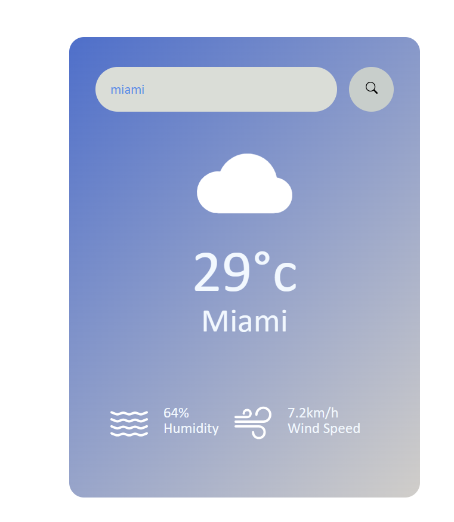

02WEB APPLICATION
Tax Tool
A tax intake management app for organizing client records, guided sessions and document preparation in one workspace.
CLIENT MANAGEMENT / TAX INTAKE / DOCUMENTS
View case study01 / WORK INDEX
A curated collection of product, brand, commerce and web work. The strongest end-to-end project comes first, followed by focused builds.
 001
001
Independent fashion brand developed from visual identity to commerce.
Brand identity, art direction, storefront design and development, Stripe payments and the customer purchase flow — built as one connected product experience.
View case study02 / SELECTED BUILDS
A selection of practical web apps and focused tools, from tax-intake workflows to everyday utilities.
A tax intake management app for organizing client records, guided sessions and document preparation in one workspace.
CLIENT MANAGEMENT / TAX INTAKE / DOCUMENTS
View case study
Search weather conditions, temperature and wind data for cities around the world.
HTML / CSS / JAVASCRIPT
View live projectA social networking app I'm currently developing.
03 / NEXT
Start with SPACE JOB — the project where brand, interface, commerce and implementation come together.